1000 Islands Travel
Сайт на телефоне
На телефоне нажми «100%» вверху и выбери «Fill».
Тогда каждый экран займёт весь телефон, как настоящий сайт.
10 страниц сайта
Нажми на экран, чтобы открыть его. Каждая страница прокручивается до конца.
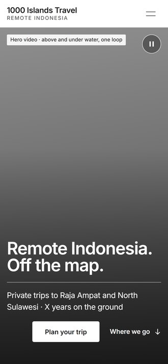
01 Home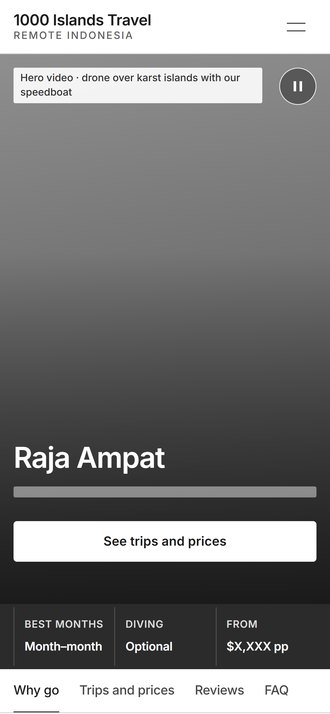
02 Raja Ampat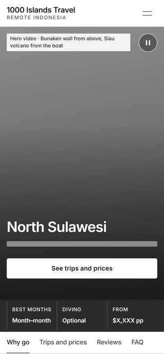
03 North Sulawesi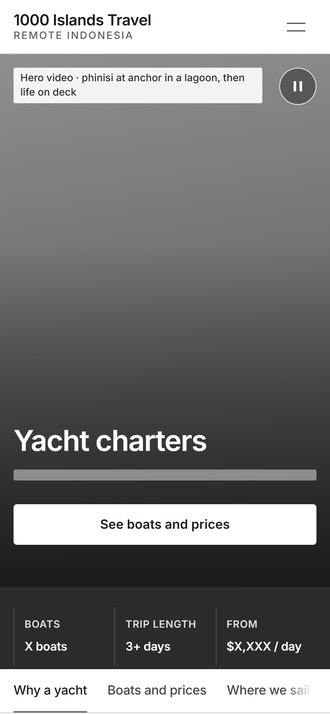
04 Yacht charters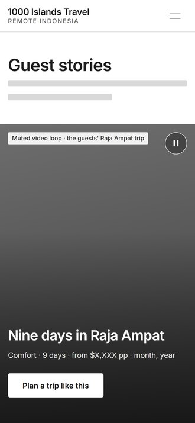
05 Guest stories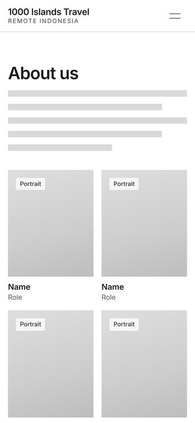
06 About us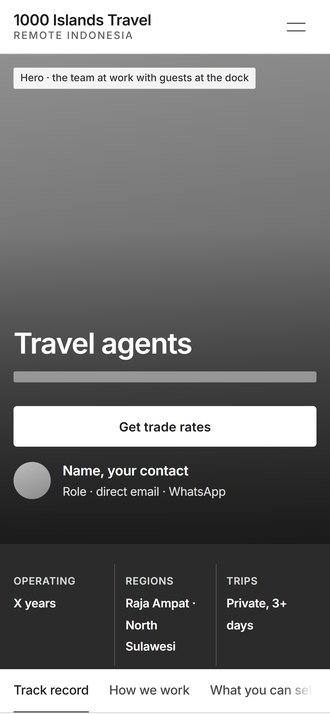
07 Travel agents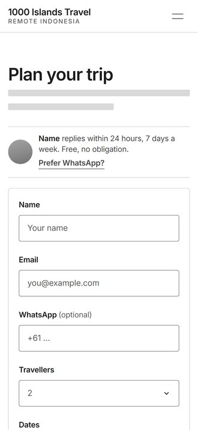
08 Plan your trip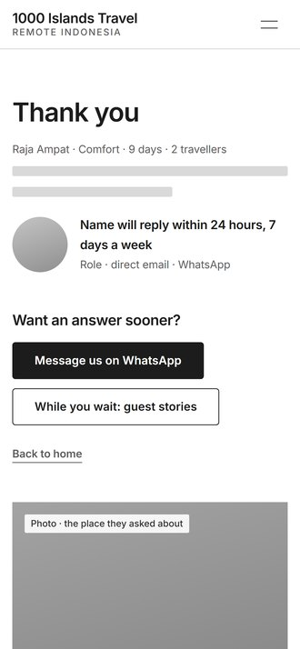
09 Thank you · traveller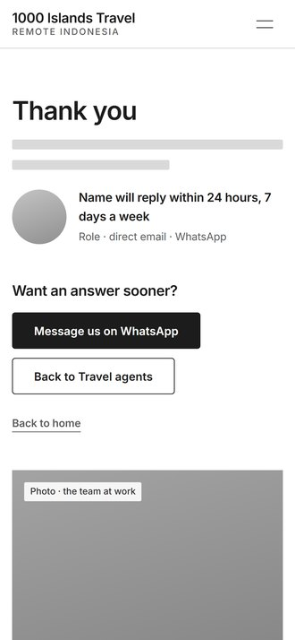
10 Thank you · agentСлужебные страницы, состояния и меню: 9
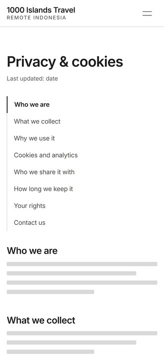
11 Privacy & cookies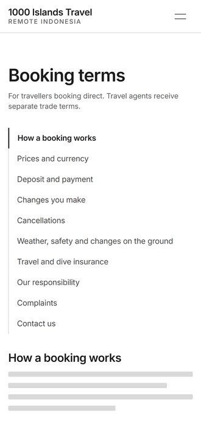
12 Booking terms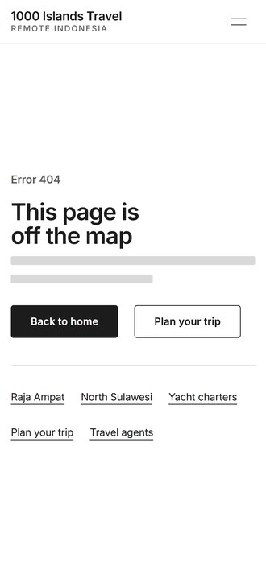
13 404 page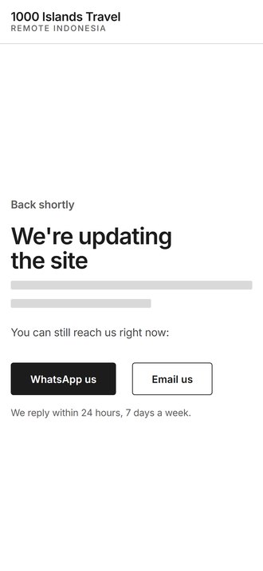
14 Maintenance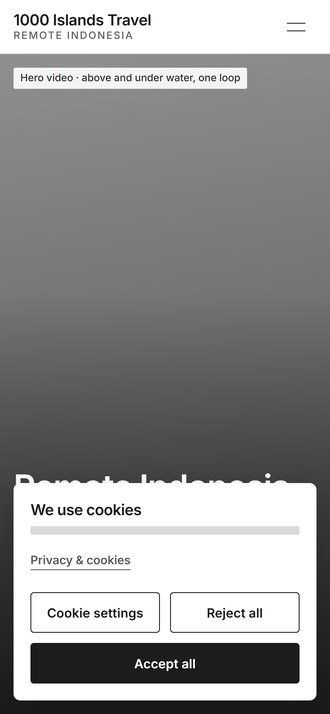
S1 Cookie banner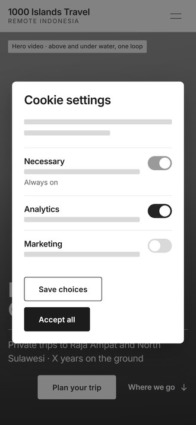
S2 Cookie settings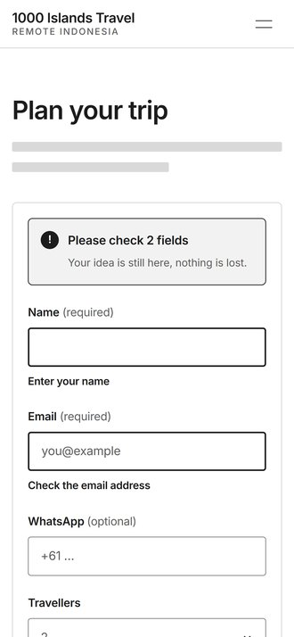
S3 Form errors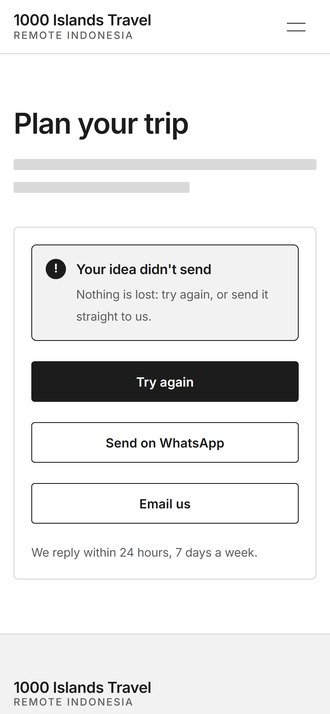
S4 Sending failed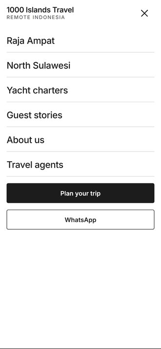
M1 Menu openЕщё в этом файле
Версия для компьютера (19 экранов), 3 автоматических письма, превью ссылок и админка. Они открываются из меню страниц вверху слева.
Как читать макет
- Серый блок с подписью: здесь будет фото или видео, в подписи сказано, какое именно
- Серые полосы: здесь будет текст
- Подписи вроде «01 · Hero»: номера блоков, ссылайся на них в комментариях
- Цветов, шрифтов и финальных текстов пока нет: это этап 2, дизайн
Как перемещаться
- Нажми Start или любую картинку выше, чтобы открыть экран. Листай вниз, как обычную страницу, а следующий экран открывает стрелка на краю экрана. Список всех экранов: название экрана вверху слева.
- Ссылки и кнопки на экранах специально не работают, чтобы случайное касание никуда не уводило. Здесь мы смотрим экраны и пишем правки. Нажимать кнопки и ходить по сайту можно в живом прототипе, ссылка есть в инструкции.
- Нижней панели (Plan your trip · WhatsApp) здесь нет: Penpot не умеет показывать её так, как на сайте. В живом прототипе она есть.
- Ползунок дней здесь стоит на 7 днях, в живом прототипе его можно двигать.